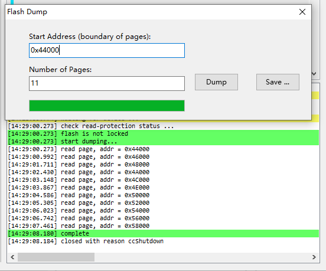

Highlights:
- Raw Packet 新增 Bare 模式
- 兼容 Silicon Labs 私有无连接 AoA
- Trace 输出到 Flash
1. 软件包
- [新增] Raw Packet Bare 模式 (extension) (6.7.0)
通过 ll_raw_packet_set_bare_mode 启用 Bare 模式后，开发者可获得更多的自定义特性：指定带外频点、
自定义 CRC、自定义数据白化等。
- [新增] 私有无连接 AoA (兼容 Silicon Labs 增强/私有 AoA) (extension) (6.7.0)
目前，ING9188xx 一共支持 4 种 AoA/AoD 方式，可以根据需要选择。各种方式的特点对比如下：
| 方式 | 说明 | 特点 |
|---|---|---|
| 有连接 | 在蓝牙连接模式下通过链路层控制协议按需发送 CTE 信号 | 容量：★★☆☆☆ 效率：★★★☆☆ |
| 无连接 | 通过蓝牙周期广播发送 CTE 信号 | 容量：★☆☆☆☆ 效率：★☆☆☆☆ |
| INGCHIPS 私有 1 (基于 Raw Packet) |
将 CTE 附加到 Raw Packet 上发送 | 容量：★★★★★ 效率：★★★★★ |
| INGCHIPS 私有 2 (基于扩展广播) |
通过普通蓝牙扩展广播发送 CTE 信号 | 容量：★★★★★ 效率：★★★★★ |
- [修正] 看门狗复位时的行为 (6.7.0)
2. 库函数
- [新增]
platform_util.c模块 (6.7.0)
使用本模块提供的函数可以提取 platform.bin 的版本号等信息。
- [修正]
gatt_client_util.c模块 (6.7.0)
修正了出错处理流程．
- [更新]
power_ctrl.lib(6.7.0)
微调了低功耗流程的相关参数。
- [新增] 将 Trace 保存到 Flash (6.7.1)
通过实现不同的 Trace 输出回调，可以用不同方式导出数据，比如 SWD、UART 等。本次更新增加了将数据循环写入 Flash 的功能。具体使用方法见文末“Trace 到 Flash 的使用方法”。
- [修正]
iic.c: 写内存溢出 (6.7.1)
iic.c 保存从 I2C 读取的数据时，“隐式”要求预留数据缓存区至 4 字节的边界。如果没有预留，会导致内存意外改写。
本版本去掉了这个“隐式”要求。
- [新增]
adc_cali.c: ADC 校准 (6.7.2)
3. 示例
- [更新] 所有 Keil 5 示例改为使用 v6 编译器 (6.7.0)
Arm Compiler Version 6 使用 LLVM 基础架构，使用 Clang 前端，与 Gnu Arm Toolchain 兼容。
- [更新]
Central CTE&Peripheral CTE: 演示了私有无连接 AoA (6.7.0)
4. 工具
-
[新增] Wizard 小功能 (6.7.0)
- 新建 Keil 5 项目时可设置编译器版本；
- 用 Visual Studio Code 打开任意项目；
- 搜索项目时，所有信息（型号、软件包等）皆可搜索。
-
[新增] 支持 Trace 到 Flash (6.7.1)
- Flash 数据导出：
- Python 脚本
flash_dump.py - Flash Downloader：Tools -> Flash Dump
- Python 脚本
- tracer: 读取 Flash 数据
- Flash 数据导出：
5. Trace 到 Flash 的使用方法
5.1 准备工作
-
规划 Flash 空间
调用
trace_flash_init时指定 Flash 空间。 -
确定 Trace 触发条件
由于 Flash 空间受限，可以在出现特定条件时通过
trace_flash_enable时控制是否将数据写入 Flash。 通过trace_flash_erase_all可以擦除用于存储 Trace 数据的 Flash 空间。 -
根据需要确定要抓取的 Trace 项目
此步骤需要实际问题多次尝试。
5.2 测试
5.3 导出 Flash 数据
使用在线调试器、Python 脚本、或者 Flash Downloader 导出 Flash 数据。
-
使用 Python 3 脚本命令行：
python flash_dump.py com_port start_addr page_no file_name比如：
python flash_dump.py COM3 0x44000 11 c:\temp\temp.bin使芯片进入下载模式即可完成导出。
-
使用 Flash Downloader：
在主界面配置串口参数，通过主菜单 Tools -> Flash Dump 打开 Dump 窗口。设置导出范围后点击 Dump， 使芯片进入下载模式进行导出。导出完成后，点击 Save… 保存文件。
